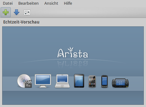
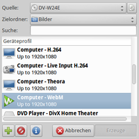
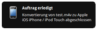
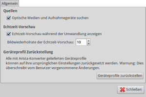
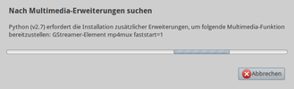
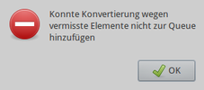

Arista Transcoder
Dieser Artikel wurde für die folgenden Ubuntu-Versionen getestet:
Ubuntu 14.04 Trusty Tahr
Zum Verständnis dieses Artikels sind folgende Seiten hilfreich:
Der Arista Transcoder  dient zur Umwandlung von Videodateien in ein anderes Format. Dabei steht die Benutzerfreundlichkeit im Vordergrund: statt technischer Details wie Bitrate, Auflösung, Komprimierung usw. wählt man einfach das Zielgerät über ein entsprechendes Symbol bzw. Profil aus.
dient zur Umwandlung von Videodateien in ein anderes Format. Dabei steht die Benutzerfreundlichkeit im Vordergrund: statt technischer Details wie Bitrate, Auflösung, Komprimierung usw. wählt man einfach das Zielgerät über ein entsprechendes Symbol bzw. Profil aus.
Damit sind Kenntnisse zu diesen Details nicht mehr zwingend erforderlich, was aber nicht heißen soll, das diese überflüssig sind. Spätestens, wenn sich eine konvertierte Datei auf dem Ziel nicht abspielen lässt, muss man tiefer in die Materie einsteigen, z.B. mit Hilfe des Artikels Grundlagen der Videobearbeitung oder Brother Johns Videoencoding-Kompendium  .
.
Es besteht auch die Möglichkeit, eigene Profile einzurichten. Ein Kommandozeilen-Konverter ist ebenfalls enthalten. Das Programm basiert auf GTK (für die Benutzeroberfläche) und Gstreamer und wurde mit Python erstellt.

Funktionen:
Live-Vorschau, um die Qualität zu überprüfen
Profile für Android, iPod, PC, DVD-Player, PSP und mehr
Automatische Erkennung verfügbarer DVD-Laufwerke und Medien
Einfaches Rippen von DVDs
Automatische Erkennung und Aufzeichnung von Video4Linux-Geräten
Unterstützung von H.264, WebM, FLV, Ogg, DivX und anderen Codecs
Einfache Stapelverarbeitung von ganzen Ordnern
Kommandozeilen-Konverter zur Erstellung von Scripten
Ähnlich einfach in der Bedienung ist das Programm HandBrake.
Installation¶
 Arista ist bis einschließlich Ubuntu 14.04 in den offiziellen Paketquellen enthalten und kann über das folgende Paket installiert [1] werden:
Arista ist bis einschließlich Ubuntu 14.04 in den offiziellen Paketquellen enthalten und kann über das folgende Paket installiert [1] werden:
arista (universe)
 mit apturl
mit apturl
Paketliste zum Kopieren:
sudo apt-get install arista
sudo aptitude install arista
Darüber hinaus sind natürlich die entsprechenden Codecs erforderlich.
Verwendung¶
 Bei Ubuntu-Varianten mit einem Anwendungsmenü startet man das Programm über den Eintrag "Multimedia -> Arista Transcoder", unter Unity gibt man den Programmnamen arista-gtk ein [3].
Anschließend wählt man über die Schaltfläche "Hinzufügen"  das Quellmedium bzw. die -datei, den Speicherort und das Geräteprofil aus. Diesen Vorgang kann man noch abkürzen, in dem man einfach das Zielgerät im Hauptfenster mit der Maus
das Quellmedium bzw. die -datei, den Speicherort und das Geräteprofil aus. Diesen Vorgang kann man noch abkürzen, in dem man einfach das Zielgerät im Hauptfenster mit der Maus  anklickt. Das entsprechende Profil wird automatisch ausgewählt. Dann beendet man den Dialog mit der Schaltfläche "Erzeuge".
anklickt. Das entsprechende Profil wird automatisch ausgewählt. Dann beendet man den Dialog mit der Schaltfläche "Erzeuge".
Nun wird eine neue Videodatei berechnet (transkodiert), was je nach der Leistung des eingesetzten Rechners mehr oder weniger länger dauern kann. Über eine Echtzeit-Vorschau ist es möglich, den Vorgang mitzuverfolgen (auf schwächeren Rechnern kann es sinnvoll sein, die Vorschau über die Einstellungen zu deaktiveren). Mehr ist nicht erforderlich, das neue Video wird automatisch gespeichert.

Ist die Transkodierung abgeschlossen, wird man von Arista über den Benachrichtigungsdienst informiert.
| Allgemeine Aktionen | |
| Symbol | Zweck |
 | Mediendatei zum Umwandeln hinzufügen |
 | Neue Voreinstellungen (Presets) vom Internet nachladen |
 | (Programm-)Einstellungen |
 | Quell-Einstellungen |
| Profil-Aktionen | |
| Symbol | Zweck |
| | Geräteprofil hinzufügen |
 | Voreinstellung löschen |
| Voreinstellung bearbeiten | |
Neue Voreinstellungen (Presets) aus dem Internet nachladen¶
Beim Aufruf dieser Funktion wird ein Browserfenster mit der Adresse http://www.transcoder.org/presets/ geöffnet. Presets werden als Archivdateien mit der Endung .tar.bz2 angeboten. Hier können zwei Fälle auftreten: entweder ein neues, noch nicht vorhandenes Profil (der häufigere Fall) oder eine aktuellere Version eines vorhandenen Profils. Beide Fälle lassen sich über "Voreinstellung bearbeiten" prüfen. Dazu einfach eine "Mediendatei zum Umwandeln hinzufügen" und ein Geräteprofil auswählen. Die gesuchte Schaltfläche befindet sich am unteren Fensterrand.
Anschließend lädt man das gewünschte Archiv herunter. Jede Archivdatei enthält ein oder mehrere Bilder und das eigentliche Profil im Format JSON. Den Inhalt entpackt [4] man in den Profilordner ~/.arista/presets/ (für den aktuellen Benutzer) oder mit Root-Rechten [5] nach /usr/share/arista/presets/ (systemweite Verfügbarkeit). Dann startet man das Programm neu.

Kommandozeilen-Konverter¶
Der Kommandozeilen-Konverter kann über den Befehl arista-transcode gestartet werden. Weitere Details sind der Manpage zu entnehmen. Ein Beispiel:
arista-transcode --device=apple --preset="iPhone / iPod Touch" test.avi
Das Ergebnis der Umwandlung findet man anschließend im selbhen Ordner wie die Originaldatei unter dem Namen test-apple.m4v
Einstellungen¶
 Auch die Konfiguration ist – wie die Bedienung des Programms – sehr einfach gehalten. Folgende Optionen stehen zur Verfügung:
Optischen Medien und Aufnahmegeräte (automatisch) suchen
Echtzeit-Vorschau
Geräteprofile (auf die Voreinstellung) zurücksetzen
Diese Einstellungen werden an zwei Stellen im Homeverzeichnis gespeichert:
~/.gconf/apps/arista/ und
~/.arista/presets/
Problembehebung¶
Umwandlung nicht möglich¶
Durch den grafischen Ansatz von Arista kann es leicht passieren, dass man unabsichtlich eine inkompatible Konvertierung auswählt. Dann wird man auf diesen Fehler hingewiesen.
|  |
| Nach Multimedia-Erweiterungen suchen |
|  |
| Fehlermeldung |
 Übersichtsartikel
Übersichtsartikel- Erstellt mit Inyoka
-
 2004 – 2017 ubuntuusers.de • Einige Rechte vorbehalten
2004 – 2017 ubuntuusers.de • Einige Rechte vorbehalten
Lizenz • Kontakt • Datenschutz • Impressum • Serverstatus -
Serverhousing gespendet von